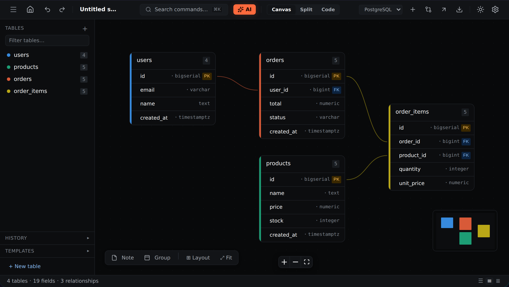

Visual canvas
Tables, typed fields, PK/FK, unique, nullable, defaults, checks and comments. Drag between fields to create relationships; add notes and groups; auto-layout, search and undo.
A free, open-source, local-first designer. It runs entirely in your browser, with no account.

Tables, typed fields, PK/FK, unique, nullable, defaults, checks and comments. Drag between fields to create relationships; add notes and groups; auto-layout, search and undo.
CREATE TABLE posts ( id serial PRIMARY KEY, author_id uuid REFERENCES users(id) );
model Post { id Int @id author User @relation(...) }
Paste SQL DDL (pg_dump and mysqldump work) or a Prisma schema. Unsupported statements are reported, not fatal.
Real output, covered by round-trip tests. Always review before running on a real database.
-- WARNING: destructive - DROP COLUMN legacy_id + ADD COLUMN tags jsonb
Save versions, restore one, or diff against the current schema and generate migration SQL.
The schema is compressed into the URL. Recipients can save a copy; an iframe embed works the same way.
No accounts. Projects live in your browser (IndexedDB). Back everything up as one JSON file and restore it anywhere.
Optional. The request goes from your browser straight to the provider you choose. Proposals are reviewed before they touch your schema.